왜 사양부터 쓰나요
DeepLearning.AI의 Andrew Ng이 강의를 열고, JetBrains의 개발자 애드보킷 Paul Everitt가 강사로 나와요. 스펙 주도 개발(SDD)은 코딩 에이전트에게 마크다운 파일이나 긴 프롬프트로 무엇을 만들지 정확히 알려 주고, 에이전트가 그 사양을 구현하게 하는 방식이에요. 사람은 코드를 손으로 짜는 대신 에이전트가 모르는 맥락을 적는 데 집중해요.
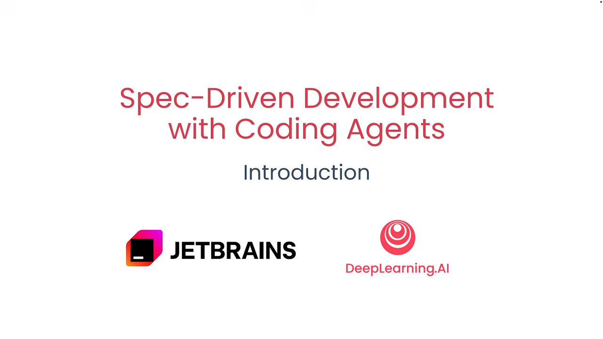
사양을 쓰면 좋아지는 세 가지
- 작은 사양 변경으로 큰 코드 변경을 조종해요. 'SQLite와 Prisma를 쓴다'는 한 문장이 코드 수백 줄을 좌우해요. 이걸 MongoDB로 바꿔도 똑같이 크게 퍼지죠. 그래서 사양을 쓰는 게 코드를 쓰는 것보다 훨씬 효율적이에요.
- 세션 사이의 컨텍스트 감쇠를 막아요. 에이전트는 상태가 없어요. 그래서 켜질 때 꼭 지켜야 할 것을 좋은 품질로 넣어 주는 게 중요해요.
- 의도 충실도가 올라가요. 문제, 성공 기준, 제약을 사람이 정하면 에이전트가 그걸 더 자세한 계획으로 넓혀요.
Andrew Ng은 에이전트와 대화하며 주요 아키텍처를 결정하고, 그 결정을 마크다운으로 요약시키는 방식을 자주 쓴다고 해요. 사양을 쓰려면 어떤 제품을 만들지, 어떤 기능과 구조를 가질지 직접 고민해야 해서 힘들어요. 하지만 이걸 건너뛰면 그 결정을 에이전트의 즉흥에 맡기는 셈이에요. 사양 없이 여러 개발자가 각자 에이전트로 빠르게, 그러나 서로 어긋나게 만들다가 뒤에서 고생한 팀도 봤다고 해요.
짧은 프롬프트 하나로 끝나는 일이면 그렇게 해도 돼요. 다만 에이전트가 20~30분 코드를 쓸 일이라면 사정이 달라요.
You're often better off sitting down for three or four minutes and writing really clear instructions.
3~4분 앉아서 아주 명확한 지시를 쓰는 편이 대개 더 나아요.
— 영상 03:56
바이브 코딩과 SDD, 그리고 전체 흐름
바이브 코딩은 '버튼 만들어 줘'라고 던지고, 결과를 보며 고쳐 달라는 말을 반복하는 방식이에요. 버튼 하나엔 괜찮아요. 하지만 큰 프로젝트에선 일회용 코드와 기술 부채가 쌓이고, 그 긴 대화 기록은 남지도 않아요.
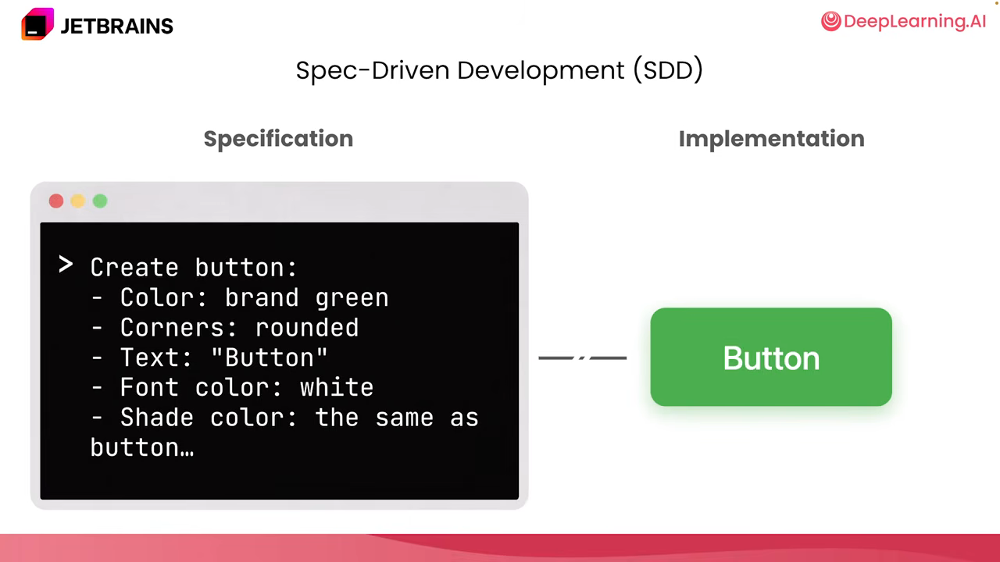
SDD는 무엇과 왜를 적은 사양을, 어떻게에 해당하는 구현과 분리해요. 사양은 사람끼리, 그리고 사람과 에이전트 사이의 계약이 돼요. 컴파일러가 소스 코드를 기계어로 바꾸듯 SDD는 사양을 소스 코드로 바꾼다는 비유도 나와요. 게다가 사양은 사람의 언어라 이해관계자도 읽을 수 있어요.
챗봇이 아니라 에이전트와 써요
챗봇은 코드에 대해 말만 할 수 있어요. 에이전트는 계획을 세우고, 코드베이스와 개발 도구에 직접 접근해 스스로 결과까지 가요. 강의는 에이전트를 유능한 페어 프로그래머로, 사람을 설계도를 주는 시니어 아키텍트로 봐요.
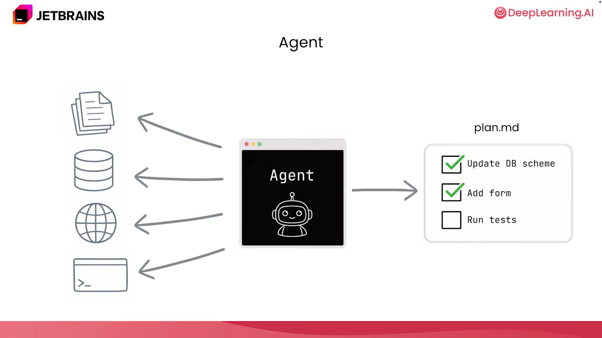
The agent is the muscle, but the spec is the brain.
에이전트는 근육이고, 사양은 뇌예요.
— 영상 08:26
핵심 기술은 알맞은 상세 수준을 고르는 거예요. 목표, 미션, 대상 사용자, 제약은 많이 적어요. 에이전트가 알아서 정할 수 있는 낮은 수준의 결정은 적게 적어요.
워크플로 한눈에 보기
| 단계 | 무엇을 하나요 |
|---|---|
| 헌법(constitution) | mission: 왜 만드는지, 누구를 위한지, 범위 tech stack: 개발·배포 기술과 제약 roadmap: 작은 단계들의 순서, 계속 고치는 문서 |
| 기능 단계 | 기능마다 사양 → 구현 → 검증을 반복해요 |
| 재계획 | 기능 사이에 헌법과 로드맵을 고치고, 프로세스 자체도 개선해요 |
많은 개발자가 최상위 AGENTS.md 파일로 비슷한 일을 해요. 강의는 헌법이 특정 에이전트에 매이지 않고 더 구조화돼 있다고 설명해요. 헌법은 사람과 에이전트 사이의 합의이면서, 사람끼리의 합의이기도 해요.
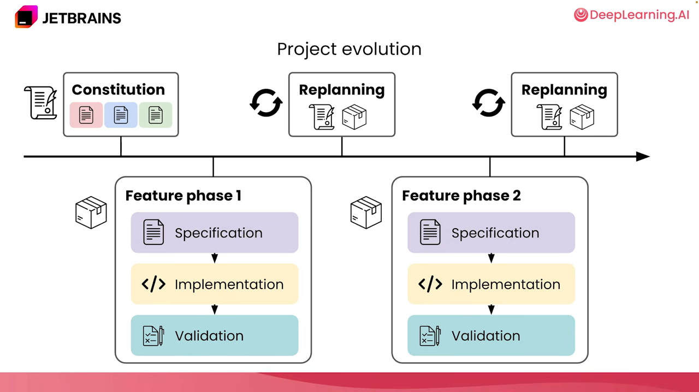
사람의 역할은 건축가와 같아요. 시공자에게 자세한 도면을 주고, 공사를 감독하고, 결과를 받아들이거나 수정을 요청해요. 시공자에게 일하는 법을 가르치지는 않고, 그들이 모르는 맥락을 주는 데 집중해요.
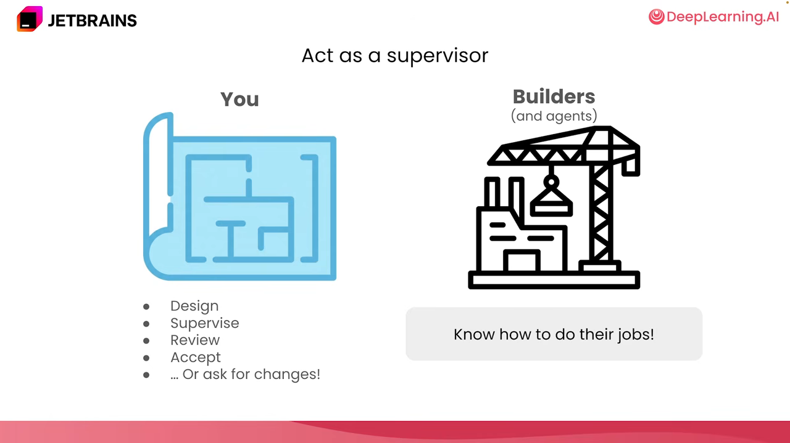
준비하고 프로젝트 헌법 쓰기
SDD는 특정 IDE나 에이전트에 묶이지 않아요. VS Code와 Codex CLI, 로컬 모델을 붙인 Zed 등 무엇을 써도 돼요. 강의는 웹 앱을 만들 거라 WebStorm에 Claude Code를 붙여 써요.
새 TypeScript 프로젝트를 Git 저장소와 함께 만들어요. 코드와 사양의 버전을 꼼꼼히 남기는 게 SDD에서 중요하거든요. 에이전트는 명령을 실행할 때마다 확인을 받아요. 무엇을 허락하는지 잘 보라고 해요. 코드의 최종 책임은 사람에게 있으니까요.
예제 앱 Agent Clinic
Agent Clinic은 유명한 학습용 프로젝트 Pet Clinic을 비튼 앱이에요. 환각, 컨텍스트 부패, 메모리 문제, 서브에이전트와의 협업에 지친 AI 에이전트가 치료받는 병원이라는 설정이에요. 예약, 질환(환각 같은 것), 치료(컨텍스트 주입 같은 것)를 관리해요.
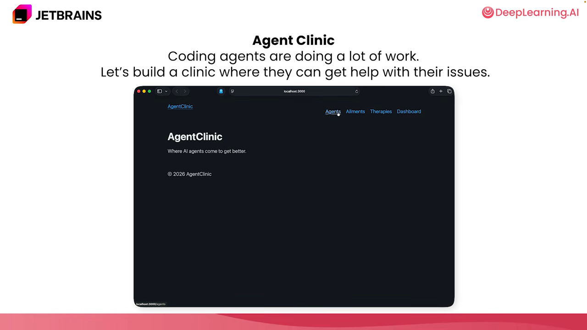
헌법은 에이전트와 대화하며 써요
먼저 프로젝트 설명을 주고, 이해관계자 의견은 README.md에 있다고 알려 줘요. 그리고 mission, tech-stack, roadmap 세 파일을 만들되 로드맵은 아주 작은 단계로 나누라고 해요. SDD는 사람이 작은 변경을 검토하는 방식에서 가장 잘 돌아가거든요. 프롬프트에는 Claude Code의 AskUserQuestion 도구로 질문하라는 지시도 넣었어요. 꼭 필요하진 않고, 화면이 보기 좋아서 썼대요.
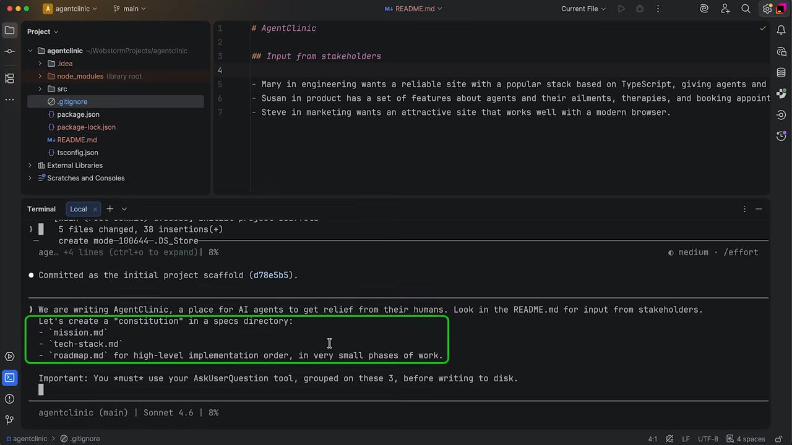
에이전트는 미션의 톤, 기술 스택(백엔드 엔지니어가 TypeScript에 익숙하다는 점), 로드맵 단계의 크기를 물어요. 로드맵은 가장 잘게 나누는 'Nano phases'를 골라요. 답을 제출하면 specs/ 아래 mission.md, tech-stack.md, roadmap.md가 생겨요.
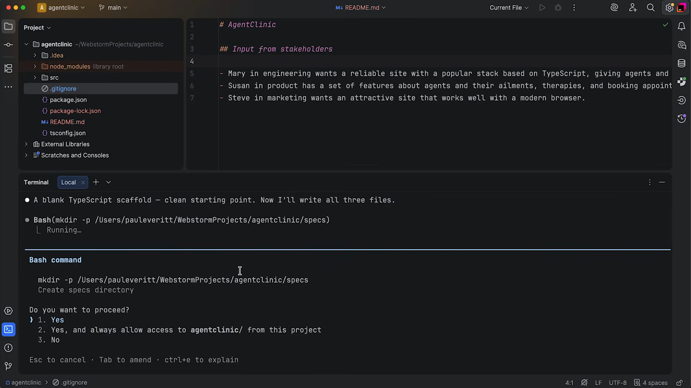
이제 휴먼 인 더 루프로 검토해요. 미션에 대상 독자가 빠져 있었는데, 에이전트가 회사 사정을 알 리 없으니 당연해요. 이걸 직접 고치지 않고 에이전트에게 고치게 해요. 손으로 고치면 연관 문서를 빠뜨리기 쉬워요. 빠른 프로토타입이라 SQLite를 따로 말하지 않았는데, 에이전트가 추천해서 기술 스택에 들어갔어요. 마지막으로 다시 훑어보고 헌법을 커밋해요.
첫 기능 한 바퀴: 계획 · 구현 · 검증
로드맵의 첫 기능은 'Hello Hono'예요. 슬라이드의 프로젝트 소개에서는 Next.js 백엔드와 React 프런트엔드라고 했지만, 실제 데모는 Hono와 JSX로 만들어요. 화면의 기술 스택 문서에도 Hono가 적혀 있어요.
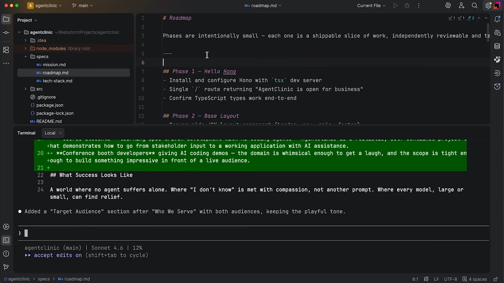
계획: 사양 세 파일 만들기
코딩은 아직 일러요. 좋은 계획은 접근 방법, 작업 순서, 성공을 확인하는 법을 담아요. 컨텍스트를 새로 비우고 시작해요. 에이전트는 공식 출처인 헌법에서 필요한 걸 읽어요. 이 기능은 별도 브랜치에서 진행한다고 알려 줘요.
에이전트가 범위와 결정 사항을 물어요. 범위는 로드맵 그대로 두고, Hono 버전 고정과 strict TypeScript를 요구사항에 넣고, 확인은 curl로 직접 하기로 해요. 에이전트 제안에 다 동의할 필요는 없어요. 걸리는 게 있으면 꼭 짚고 넘어가요.
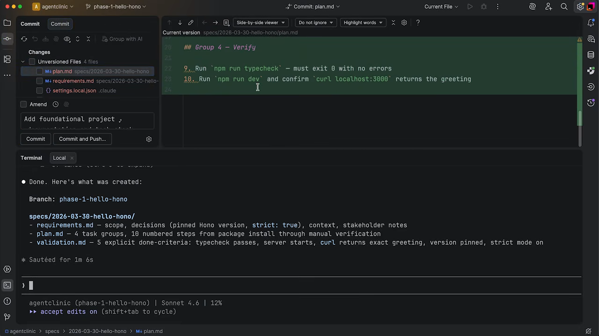
| 파일 | 담는 것 | 검토할 때 볼 점 |
|---|---|---|
plan.md | 번호 붙은 작업 그룹 | 작업 순서와 크기가 맞는지 |
requirements.md | 범위, 결정, 맥락 | 중요한 기술 요구와 제약. 변수 이름 같은 세부는 쓰지 않아요 |
validation.md | 구현이 성공했는지 판단할 기준 | 에이전트가 스스로 맞게 했는지 확인할 수 있는지 |
잘못된 게 보이면 에이전트에게 고치게 해요. 그래야 요구사항과 검증이 함께 맞춰져요. 강의는 보기 좋은 홈페이지 플레이스홀더를 추가해 달라고 했고, 세 파일이 함께 바뀌었어요. 사람은 과정을 통제하되 에이전트를 지나치게 조종하지는 않아요. 여기서 바꾼 사양은 아래로 코드 수백 줄이 되니, 이 시간은 아깝지 않아요.
구현: 컨텍스트 비우고 한 번에
/clear로 컨텍스트를 비우고 모든 작업 그룹을 구현하라고 해요. 보안이나 DB처럼 작은 실수가 나중에 커지는 영역이면 그룹을 하나씩 진행하며 커밋해도 좋아요. 실행 중에는 콘솔과 커밋 창으로 변경을 미리 봐 둬요. 끝나면 서버를 띄워 브라우저에서 확인해요. 'Nano'를 골랐으니 화면에 나온 건 많지 않아요.
검증: 사람이 하는 리뷰
병합은 아직이에요. 리뷰는 어떤 CSS 클래스를 썼는지보다 기능이 사양을 반영하는지에 집중해요. 홈 화면이 너무 빈약해서 header, main, footer 영역을 가진 레이아웃 컴포넌트를 요청했어요. 이건 계획에서 빠졌던 내용이라, 사양과 구현을 함께 고치게 해요.
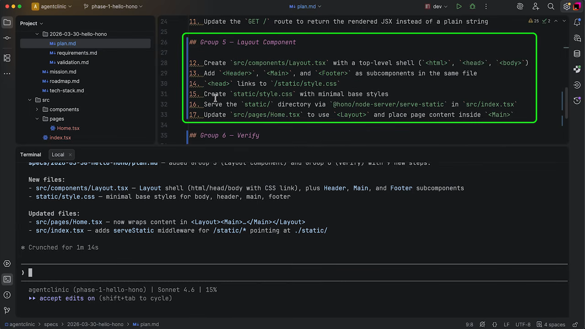
에이전트가 만들고 사람이 검증하는 이 과정이 휴먼 인 더 루프예요. 에이전트가 코드를 너무 빨리 쓰다 보니 요즘 개발자들은 인지 부채를 이야기해요. 그래서 변경은 감당할 만한 크기로 유지해요.
세 하위 컴포넌트가 한 파일에 들어 있어 IDE의 이동 도구로 나누려다 멈춰요. 손으로 하면 사양과 README가 코드와 어긋나는 드리프트가 생기거든요. 그래서 이것도 에이전트에게 맡겨 관련 언급까지 고치게 해요.
로드맵에 체크 표시를 하는 정도의 작은 헌법 변경은 기능 브랜치에 같이 둬도 괜찮아요. 헌법을 크게 바꾼다면 별도 브랜치가 나아요. 어떤 사양이 어떤 코드를 만들었는지 연결하는 방법은 커뮤니티에서도 아직 정리 중인 주제라고 해요.
기능 사이의 재계획
첫 기능이 끝났다고 바로 다음으로 달려가지 말라고 해요. 한 발 물러서서 재계획하는 단계예요.
You have to run slow to run fast.
빨리 가려면 천천히 가야 해요.
— 영상 29:17
헌법을 고칠 때는 따로 브랜치를 따는 게 좋아요. 그러면 어떤 버전의 헌법이 어떤 코드를 만들었는지 추적할 수 있어요. 이번 재계획에서는 네 가지를 해요.
1. 테스트 방침 넣기
검증 단계에 테스트가 좋은데, 에이전트에게 테스트 선호를 알려 준 적이 없었어요. 기술 스택에 Vitest를 쓰는 방침을 넣고, 기존 기능 사양과 구현에도 반영하게 해요. 에이전트는 설정만 하고 테스트는 쓰지 않아서 테스트 작성을 따로 요청해요. 그다음 테스트를 디버거로 돌리며 코드 흐름을 직접 따라가 봐요.
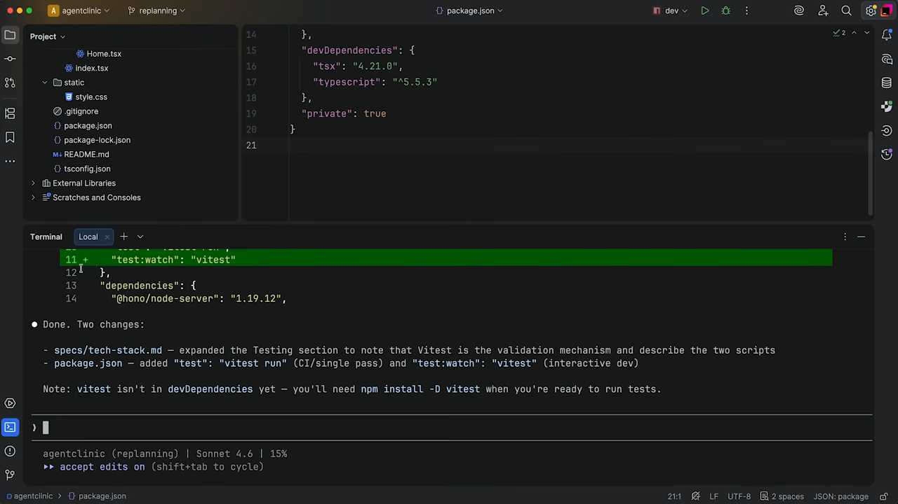
2. 제품 방향 바꾸기
제품 매니저가 사용자 40%가 모바일이라며 반응형 디자인을 강조하자고 해요. 에이전트에게 제품 사양, 기능 사양, 코드를 함께 고치라고 해요. 지금은 초기라 작은 변경이니 재계획 중에 바로 처리해요. 일이 크면 로드맵에 별도 기능 단계로 올리는 게 나아요. 사양에는 코드만이 아니라 결정도 남아야 팀이 소통하기 쉬워요.
3. 로드맵 다시 보기
다음 항목이 여전히 맞는지 봐요. 2~5단계가 서로 붙어 있어서 한 단계로 합쳐요.
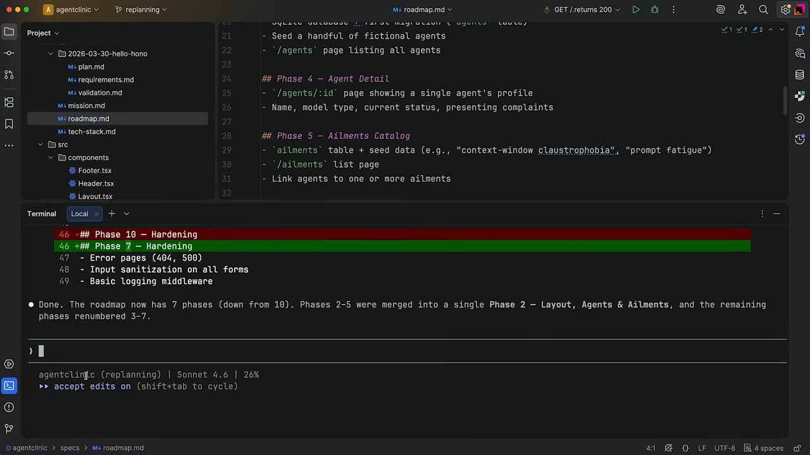
4. 워크플로 자체 고치기
재계획은 기능이나 프로젝트만이 아니라 워크플로 자체를 개선하는 자리이기도 해요. 예를 들어 비개발 이해관계자가 진행 상황을 보고 싶어 하면, 병합할 때마다 CHANGELOG를 갱신하면 돼요. 이런 정해진 반복 작업에 에이전트 스킬이 잘 맞아요. 스킬은 에이전트에게 새 능력을 주는 지시와 자원의 묶음이에요.
스킬은 손으로 써도 되지만, 많은 에이전트에 스킬 작성을 돕는 스킬이 있어요. 에이전트는 이번 changelog 스킬을 전역 스킬 영역에 만들었어요. 그래서 모든 프로젝트에서 쓸 수 있어요. 이 프로젝트 전용으로 둘지 전역으로 둘지는 취향의 문제라고 해요.
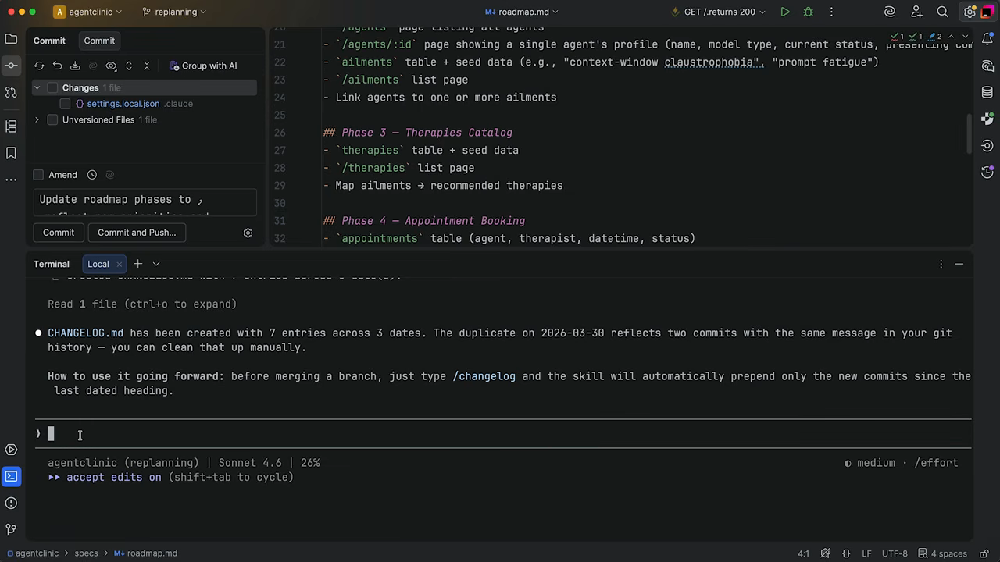
이제 개발자의 일은 구현보다 계획과 검증에 더 많이 있어요. 그러니 기능 사이에 재계획할 시간을 꼭 떼어 두라고 해요.
두 번째 기능과 MVP 실험
에이전트는 변경을 많이, 빠르게 만들어요. 그걸 사람이 하나하나 검토하다 보면 지쳐요. 강의는 이걸 AI 피로라고 불러요.
AI 피로를 줄이는 깔끔한 시작
기능 단계 사이를 확실히 끊어요. 새 기능을 시작하기 전에 이렇게 물어봐요.
- 끝나지 않은 작업이 남아 있나요?
- 지난 기능 브랜치를 main에 병합했나요?
- 다음 로드맵 항목이 지금 할 일이 맞나요?
- 에이전트 컨텍스트를 비웠나요? 그래야 기억이 아니라 사양이 의도를 담고, 한정된 컨텍스트를 다음 일에 쓸 수 있어요.
두 번째 기능: Agents & Ailments
에이전트가 이번에도 좋은 질문을 해요. 합친 기능을 한 단계로 둘지 물어서 그대로 두기로 해요. 마이그레이션은 순수 SQL로 정해요. 사양 초안이 나온 뒤 CSS 프레임워크로 Pico CSS를 쓰자는 의도를 추가하고, 다른 파일에도 반영하게 해요.
계획 단계와 기능 단계를 나누면 사람과 에이전트 모두 컨텍스트가 넘치지 않아요. 기능이 너무 커 보이면 계획의 일부만 먼저 구현하라고 해도 돼요.
구현이 끝나면 천천히 깊게 리뷰해요. AI 피로를 줄이려면 높은 수준의 요구사항만 챙기고 변수 이름 같은 건 따지지 않아요. 내 이름으로 커밋할 수 있는 코드인지만 보면 돼요. 강의는 props 타입을 인라인으로 쓴 걸 별도 TypeScript 타입으로 빼라고 코드 전체에 요청해요. 이런 누락은 실패가 아니에요. 새 세부를 발견하며 사양이 자라는 과정이고, 그걸 남기면 다음 결과가 좋아져요.
검증: 서브에이전트로 한 번 더 보기
앱을 실행해 보는 것만이 아니라, 변경을 내가 이해했는지도 검증해요. 그래야 인지 부채가 쌓이지 않아요. 테스트를 읽고 디버거로 돌려 보면 흐름을 따라가기 좋아요.
가끔은 에이전트가 거짓말을 하지 않았는지도 확인해야 해요. 서브에이전트 여러 개를 띄워 이번 변경을 포함한 프로젝트 전체를 깊게 리뷰하게 해요. 서브에이전트를 쓰면 메인 에이전트의 컨텍스트를 더럽히지 않고 생각할 공간을 더 줄 수 있어요.
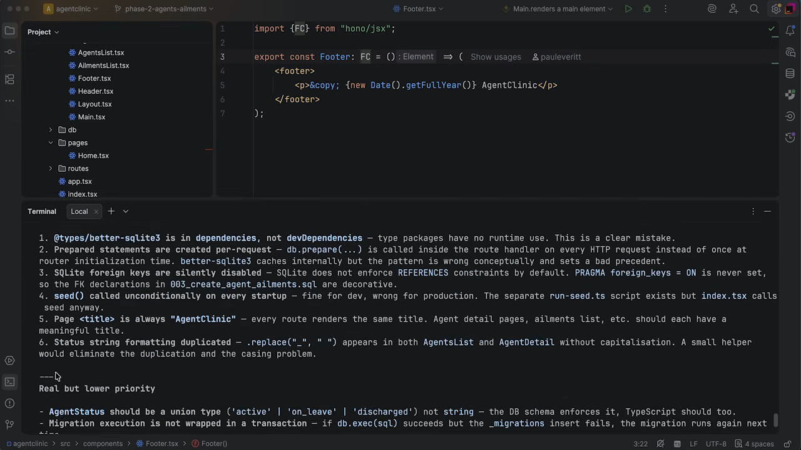
권고를 받아들이면 에이전트가 고치고 테스트를 돌려 프로젝트를 좋은 상태로 만들어요. 마지막으로 지난번에 만든 changelog 스킬을 돌리고, 커밋하고, 병합해요. 로드맵을 다시 훑어 다음 기능이 맞는지 보는 짧은 재계획도 해요. 이렇게 기능 사이를 깔끔히 끊으면 AI 피로를 다스릴 수 있어요.
MVP 실험: 남은 로드맵을 한 번에
경영진이 MVP를 원해요. 지금까지의 헌법과 사양으로 충분한지 시험해 보기로 해요. 평소 기능 사양 프롬프트를 조금 바꿔 남은 로드맵 전체를 구현하라고 하고, 기존 기능 사양을 참고하라고 해요.
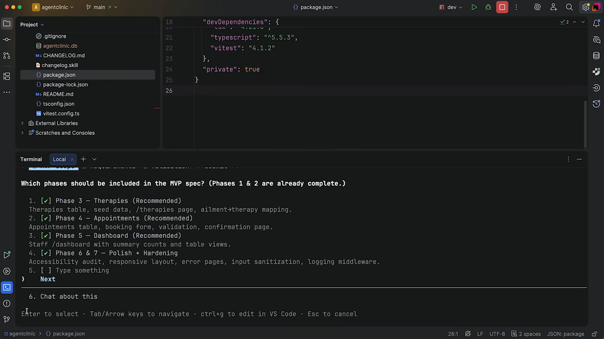
이렇게 큰 덩어리는 헌법과 사양 품질에 자신이 있고, 검토와 검증을 감당할 수 있을 때만 하라고 해요. 결과가 원하는 것과 다르면, 무엇이 에이전트를 엇나가게 했는지 찾는 재계획을 꼭 해야 해요.
MVP를 띄우니 각 화면이 DB의 샘플 데이터로 채워져 있어요. 보통은 코드를 검증하겠지만 MVP라서 사양을 검증하게 했어요. 그랬더니 MVP가 계획의 빈틈을 드러냈어요. 이 평가를 이해관계자와 공유한 뒤 브랜치를 병합하거나 보관하면 돼요.
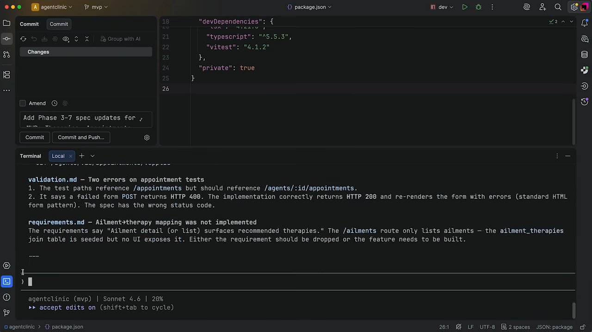
기존 프로젝트(브라운필드)에 들이기
SDD나 AI는 그린필드에만 쓸모 있다는 말이 있어요. 강의는 이미 돌아가는 브라운필드 프로젝트에도 잘 맞는다고 보여 줘요. 익숙한 Agent Clinic MVP를 main에서 specs 폴더 없이, 다른 디렉터리의 새 Claude Code 세션으로 열어 '레거시'로 삼아요. 남은 건 프로젝트 배경을 담은 README.md와 할 일 목록 TODO.md뿐이에요. 실제 레거시라면 이슈 트래커, 스프레드시트, 워드 문서에 계획이 흩어져 있겠죠.
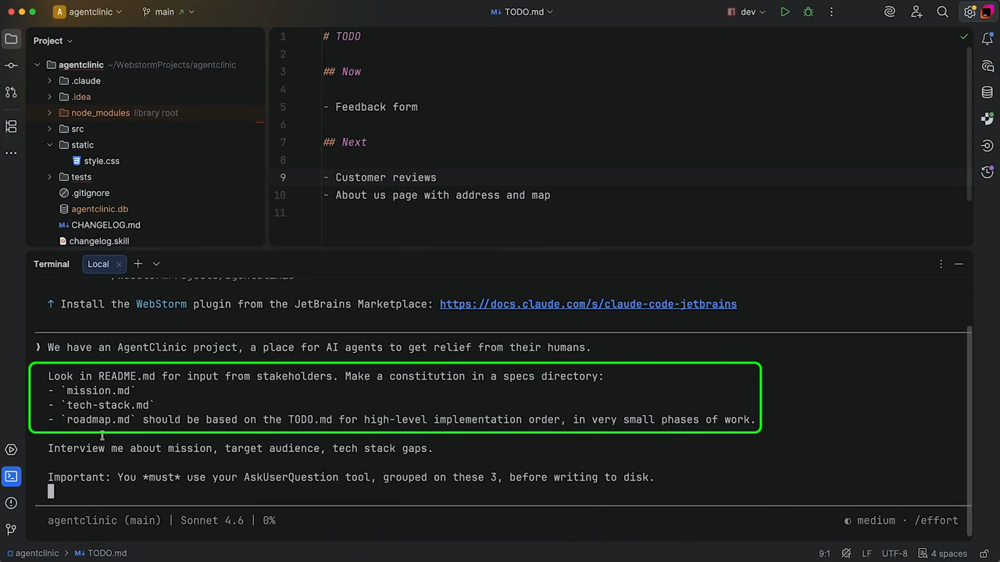
에이전트는 코드베이스를 탐색하며 SDD 산출물을 거꾸로 만들어 내요. 도구 호출이 많이 보이는 이유예요. 이렇게 만든 헌법은 앞으로 에이전트가 하는 변경을 과거 개발자들이 만든 것과 맞춰 줘요. 코드, 커밋, 문서 같은 재료가 많아서 대화는 그린필드보다 오히려 풍부해요.
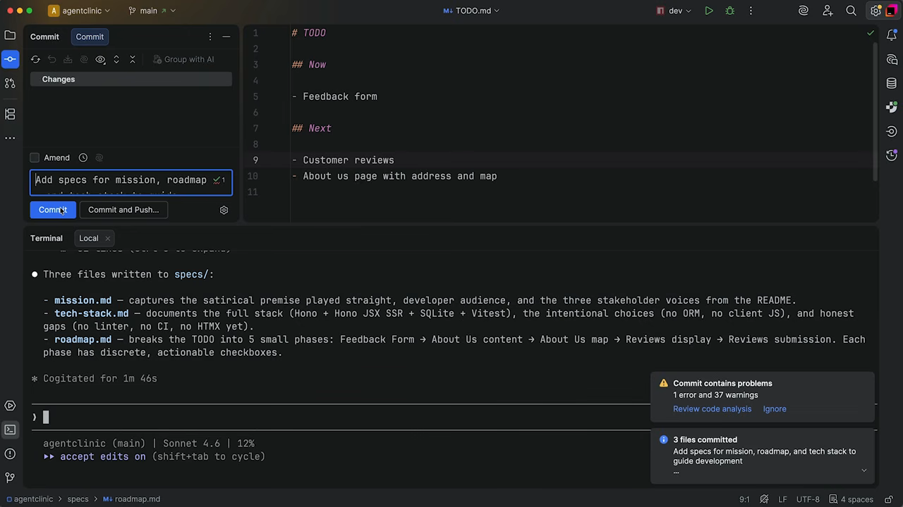
헌법을 커밋하면 레거시 프로젝트가 SDD 위에 올라가요. 그다음은 앞에서 본 그대로예요. 로드맵의 첫 기능(피드백 폼)을 에이전트와 대화하며 계획하고, 사양 세 파일을 검토하고 커밋해요. 구현하고, 검증하고, 병합해요. SDD를 막 들였으니 재계획에서 손볼 게 많을 거예요.
The spec is now the memory of the project.
이제 사양이 프로젝트의 기억이에요.
— 영상 49:54
스킬 · MCP · 플러그인으로 자동화하기
반복 프롬프트를 스킬로
기능 사양을 시작할 때마다 '이거 하고, 저거 하고, 이 세 파일 써'를 똑같이 쳤어요. 이걸 에이전트 스킬로 자동화해요. 에이전트의 스킬 생성기를 써서 대화하며 만들어요. 커뮤니티에도 이런 스킬이 많아 설치해 써도 돼요.
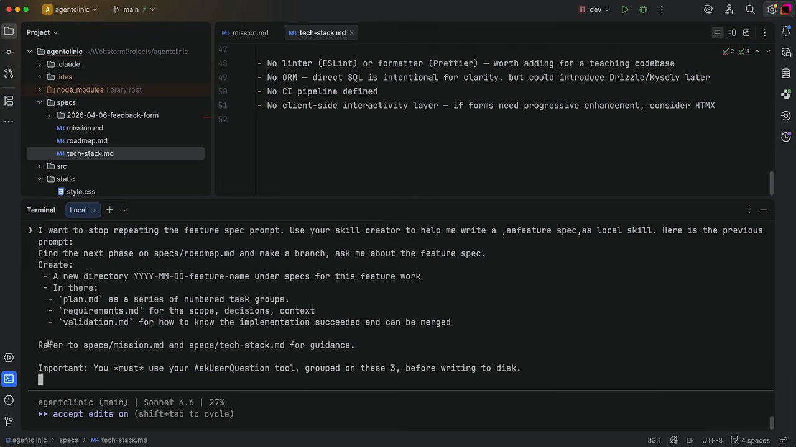
스킬은 프로젝트별로도, 전역으로도 둘 수 있어요. 부르는 방법도 여러 가지예요. 프롬프트에서 스킬을 먼저 언급하고 할 일을 말해도 되고, 스킬 안에서 다른 스킬을 부르게 해도 돼요. 에이전트는 스킬 설명을 보고 언제 부를지 정해요. 이걸 점진적 공개라고 해요. 다만 컨텍스트가 커질수록 이 판단이 흔들려요. 파일을 태그하듯, 꼭 쓰고 싶은 스킬은 이름을 불러 주는 게 확실해요. 한때 인기였던 커스텀 슬래시 명령에서 스킬로 옮겨 가는 에이전트가 많다고 해요.
MCP와 CLI + 스킬
API, 사내 지식 베이스, 데이터베이스 같은 자원을 붙일 때는 그동안 MCP가 표준이었어요. 예를 들어 에이전트는 패키지에 대한 최신 맥락이 필요해요. 가장 많이 쓰이는 Context7은 패키지의 최신 문서를 에이전트 컨텍스트에 넣어 줘요.
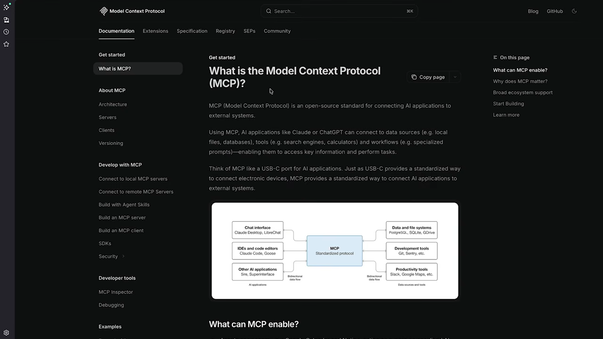
MCP 서버는 여전히 많이 쓰여요. 하지만 CLI 도구를 부르는 스킬이 같은 일을 더 깔끔하게 하는 경우가 많아요. Context7도 지금은 CLI를 부르는 스킬 방식을 권해요. 설치할 때 MCP 서버와 'CLI + 스킬' 중 하나를 고르게 하고, 강의는 'CLI + 스킬'을 골라요. CLI는 설정이 적고 컨텍스트도 덜 써서 이 흐름이 빨라지고 있다고 해요.
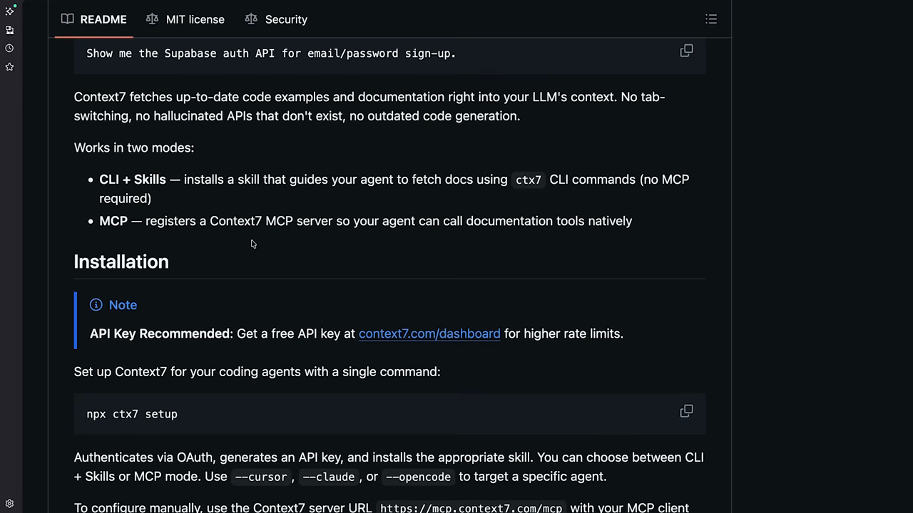
플러그인으로 나누기
워크플로가 커지면 다른 기기, 팀원, 바깥 세상과 나누고 싶어져요. Claude Code 같은 일부 에이전트에는 확장을 묶어 설치·업데이트하는 플러그인이 있어요. 다만 아직 에이전트 공통 표준은 아니에요. 앱이나 의존성처럼 코드를 실행하니, 설치하고 업데이트할 때 믿을 수 있는지 확인해요.
이미 나온 SDD 도구
| 도구 | 영상에서 소개한 흐름 | 이 강의 흐름과의 대응 |
|---|---|---|
| GitHub Spec Kit | constitution → plan → tasks → implement 슬래시 명령 | 강의에서 쓴 흐름과 거의 같아요 |
| OpenSpec | propose → explore → apply → archive | propose·explore는 계획, apply는 구현, archive는 재계획이에요 |
둘 다 브랜치 관리, 검증 스크립트, 정해진 사양 문서 형식을 갖추고 있어요. OpenSpec은 작은 기능을 빠르게 처리하는 정형 패턴도 있어요. 이런 오픈소스 워크플로를 써 보며 내 워크플로를 다듬어 보라고 해요.
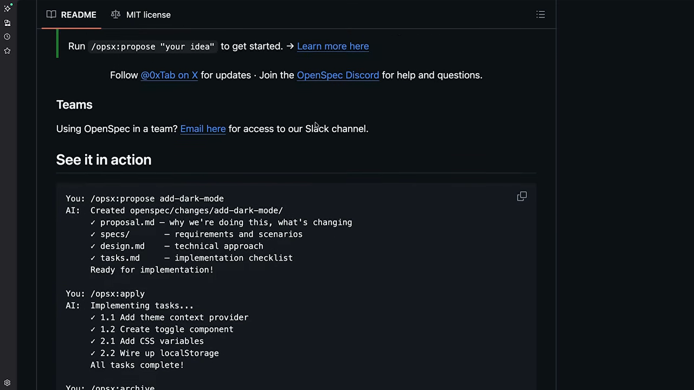
떠오른 아이디어는 백로그로
기능 작업 중에 아이디어가 떠오를 때가 있어요. 예를 들어 배포용 DB를 무엇으로 할지 같은 거요. 브랜치 작업을 멈추긴 싫고, 아직 로드맵에 올릴 만큼 확정된 것도 아니에요. 이럴 땐 에이전트와 조사한 뒤, 정해진 위치에 보고서로 남기게 해요. 나중에 이 백로그 파일을 링크해서 로드맵에 올리면 돼요. 이 일이 잦아지면 조사용 스킬을 만들어도 좋아요.
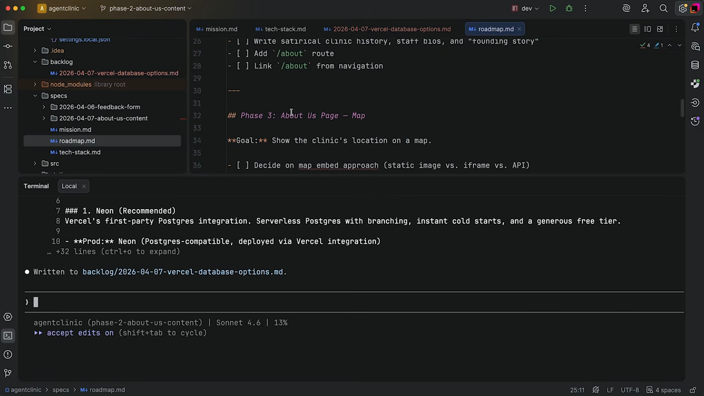
에이전트를 바꿔도 남는 워크플로
SDD는 일의 중심을 '어떻게'에서 '무엇과 왜'로 옮겨요. 에이전트와 모델은 워낙 빨리 바뀌니, 워크플로를 한 가지 선택에 묶어 두지 않는 게 좋아요. 표준을 쓰면 에이전트를 바꿔도 워크플로와 도구가 남아요.
| 표준 | 영상에서 말한 역할 |
|---|---|
| MCP | 외부 도구 연결 |
| AGENTS.md | 규칙 |
| 에이전트 스킬 | 추가 맥락을 담은 반복 워크플로 |
| ACP | 에이전트와 클라이언트(에디터) 연결 |
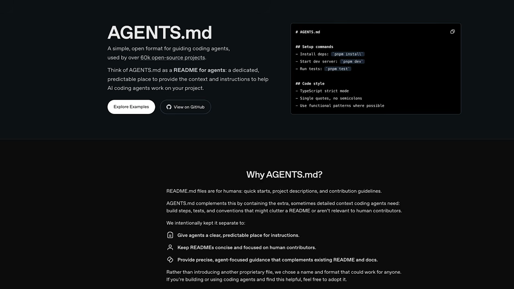
스킬을 다른 에이전트로 옮기기
OpenAI의 Codex는 데스크톱 앱, 에디터, 터미널에서 돌아가는 에이전트예요. 앞에서 만든 feature-spec 스킬을 Codex가 쓰는 경로로 복사하자 그대로 잘 돌아가요. 같은 프로젝트에서 에이전트를 바꿔 가며 SDD 워크플로를 유지할 수 있다는 뜻이에요.
ACP로 에이전트와 에디터 잇기
ACP는 에이전트와 에디터를 쉽게 연결하는 표준이에요. 둘 다 ACP를 지원하면 바로 맞물려요. 구조는 LSP와 같은 방식을 따라요. 다음 편집 제안(next edit suggestion)이나 플랜 모드 같은 것까지 다루고, 직접 만든 커스텀 에이전트를 붙일 수도 있어요.
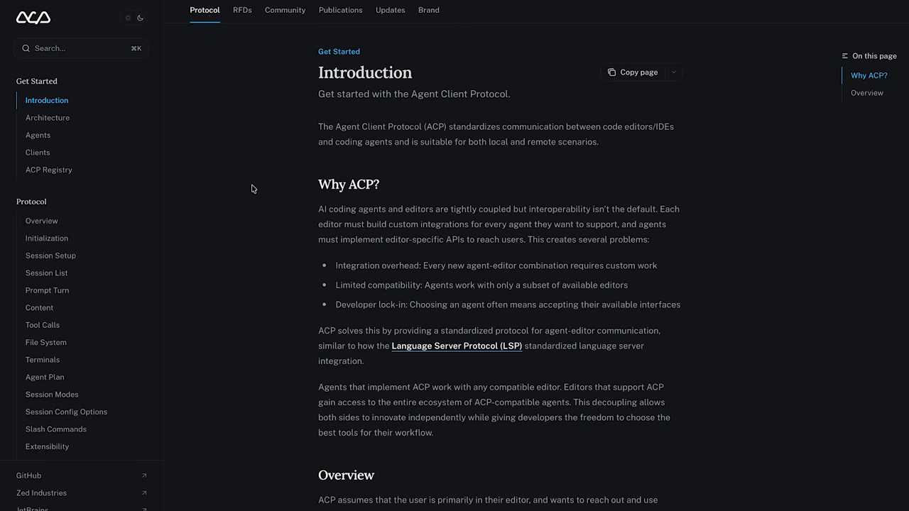
ACP 레지스트리는 에이전트를 찾고, 설치하고, 클라이언트에 연결하는 과정을 자동화해요. JetBrains IDE에서는 AI 채팅 창에서 레지스트리로 들어가 호환 에이전트 목록을 볼 수 있어요. 오픈소스 에이전트 OpenCode를 설치하자 OpenCode 자체 설치와 IDE 연동이 한 번에 끝났어요. 이제 같은 에디터에서 다른 에이전트들과 나란히 쓸 수 있어요.
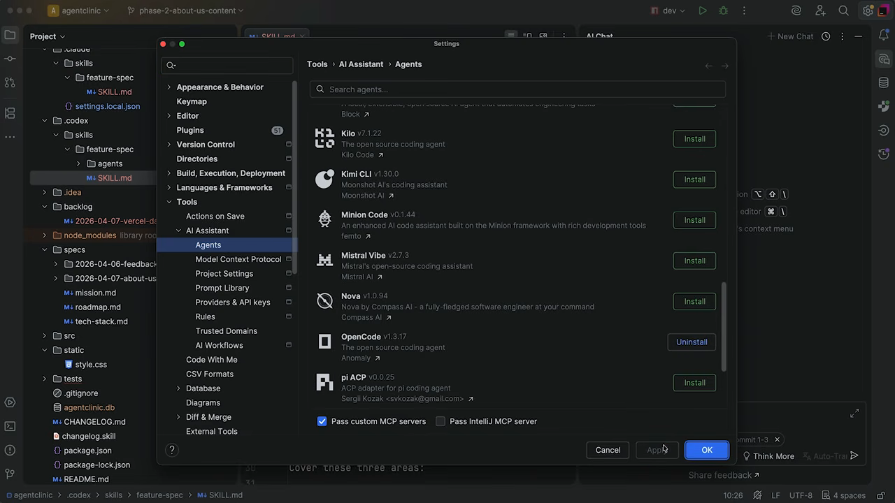
어떤 에이전트를 고를까요
업계가 빨리 바뀌어서 벤치마크 리더보드도 금방 바뀌어요. 최신 정보를 챙기되, 나에게 중요한 기준으로 고르라고 해요. 사양은 특정 에이전트나 IDE보다 한 단계 위에서 동작하니, 표준이 늘수록 이 유연성도 커져요.
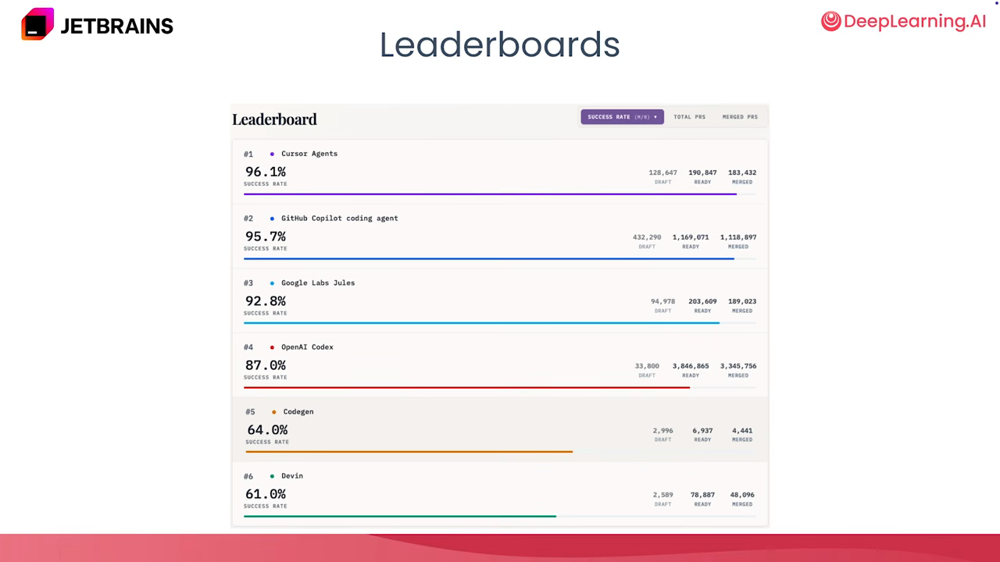
마무리
바이브 코딩에서 원하는 걸 바라기만 하던 데서, SDD로 실제로 필요한 것에 다가가는 과정을 밟았어요. 헌법을 쓰고, 대화로 기능을 계획하고, 휴먼 인 더 루프로 검증하고, 스킬과 표준으로 워크플로를 자동화했죠. 강사는 너무 빨리 움직인 대가를 본 엔지니어가 많다며, 다시 엔지니어링을 가져오자고 말해요.
The specs you write today become the memory of your projects tomorrow.
오늘 쓴 사양이 내일 프로젝트의 기억이 돼요.
— 영상 01:00:38